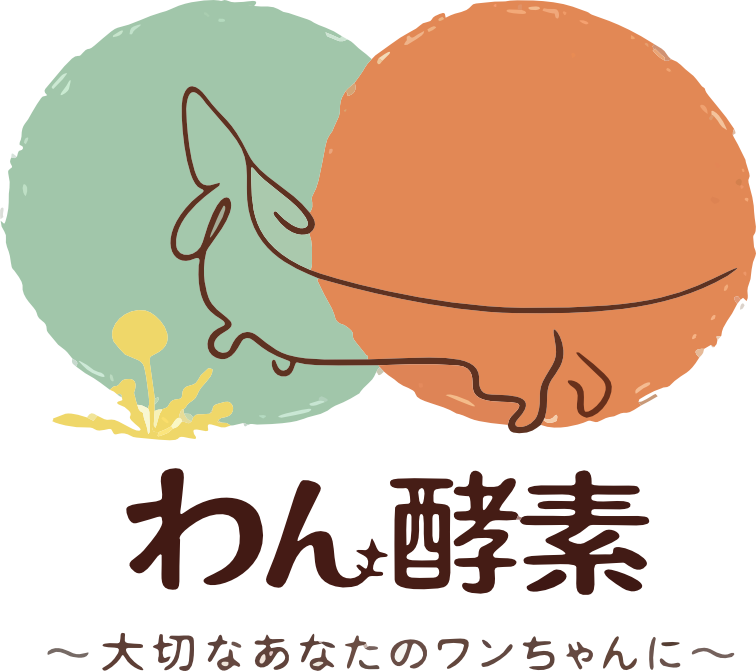
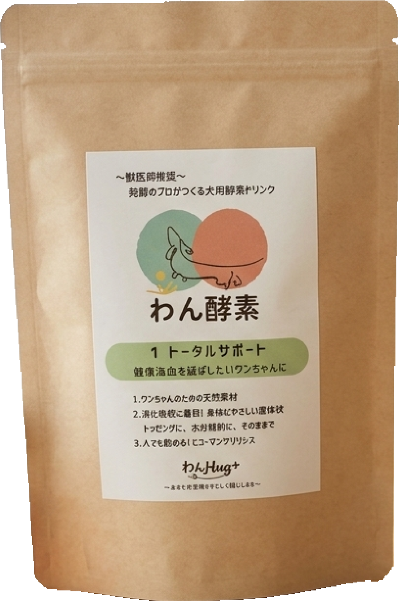
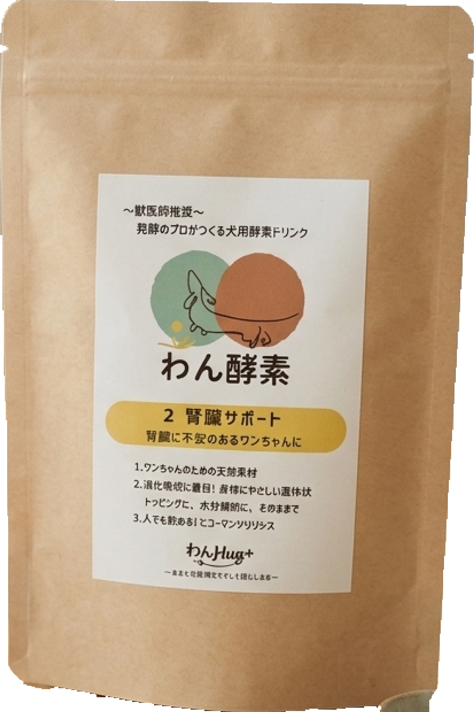
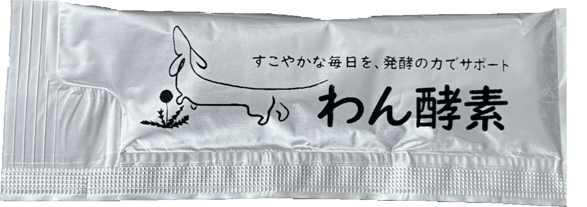

1 Total Support
毎日の元気を、食事から。
植物由来の発酵素材を組み合わせ、愛犬のすこやかな毎日を食事から支えることを目指しました。 初めてのわん酵素としても選びやすいラインです。
Fermented Pet Wellness




Made for every day
液体だから、毎日の食事に取り入れやすい。 いつものフードに添えたり、そのままあげたり。愛犬の好みに合わせてお楽しみいただけます。与える量は商品表示を目安に調整してください。
Lineup Visual
毎日の健康維持を考えたトータルサポートと、食事の成分に気を配りたい方へ向けた腎臓サポート。 愛犬の食生活に合わせて選べる、2つの素材設計です。
植物由来の発酵素材を組み合わせ、愛犬のすこやかな毎日を食事から支えることを目指しました。 初めてのわん酵素としても選びやすいラインです。
タンパク質の量や配合素材に着目したラインです。腎臓病で治療中・食事管理中の場合は、使用前に獣医師へご相談ください。
Format
Product Specifications
すべての製品に共通する発酵素材と、目的に合わせた2つの配合。 難しい製品情報を、順番にわかりやすくご紹介します。
POINT01
植物素材を
発酵
植物素材に、麹や酵母などの微生物の働きを生かした発酵素材を使用。 発酵によって育まれる風味を、毎日の食事に取り入れやすい液体に仕上げています。
さまざまな植物素材と、発酵の過程で生まれる成分に着目。素材の組み合わせと風味を大切にした商品づくりを目指しています。
発酵の過程では、微生物の働きによって原料の一部が分解され、成分や風味が変化します。変化の程度は原料や発酵条件によって異なります。
植物素材と発酵由来の風味を生かし、いつもの食事に変化を添えられるようにしています。
いつものフードに混ぜやすく、そのままでも与えられる液体タイプ。愛犬の好みに合わせて使い方を選べます。
1本10mlのスティックで、毎日の食事に取り入れやすく。1本の容量と、愛犬に合った給与量は別ですので、商品表示をご確認ください。
わん酵素は、いつもの食事に添えて使う食品です。主食の栄養バランスを大切にしながら、発酵素材を取り入れる習慣としてご活用ください。
POINT02
どちらも植物由来の発酵素材がベース。配合素材と成分表示を比べて、愛犬の食生活に合うものをお選びください。
POINT03
多彩な植物素材を組み合わせ、日々の健康維持を考えた配合。
キクイモとツルレイシを配合。さまざまな植物素材を日々の食事に取り入れるという考え方から組み合わせています。
アカメガシワ、くまざさ、ドクダミを配合。多彩な植物素材を取り入れた、トータルサポートの素材設計の一つです。
きのこ素材のメシマコブと高麗人参を配合。年齢を重ねた愛犬の毎日も見据え、素材の組み合わせに着目しています。
タンパク質の量と植物素材の組み合わせに着目した配合。
植物由来の発酵素材をベースにしています。
タンパク質の量に着目した素材設計です。
5つの和漢植物を組み合わせています。
鶏肉粉末と発酵由来の風味を生かしています。
粗タンパク質の表示値は0.12%。食事の成分を選ぶ際の参考にしてください。療法食との組み合わせは、タンパク質だけで判断せず獣医師にご確認ください。
とうもろこしひげ、オオバコ、たんぽぽ、撫子、サンシュユを配合。植物素材の組み合わせを大切にしています。
鶏肉粉末と発酵由来の風味を生かし、毎日の食事に取り入れやすい味わいを目指しました。好みには個体差があります。
Pet Food Information
わん酵素は、毎日の食事に添える食品です。ここで紹介する素材や配合の考え方は、特定の効果を保証するものではなく、疾病の診断・治療・予防を目的としたものではありません。 治療中・投薬中、または療法食を利用している場合は、使用前に獣医師へご相談ください。主食や療法食の代わりにはせず、給与量・保存方法は商品表示に従い、飲み水は別に用意してください。